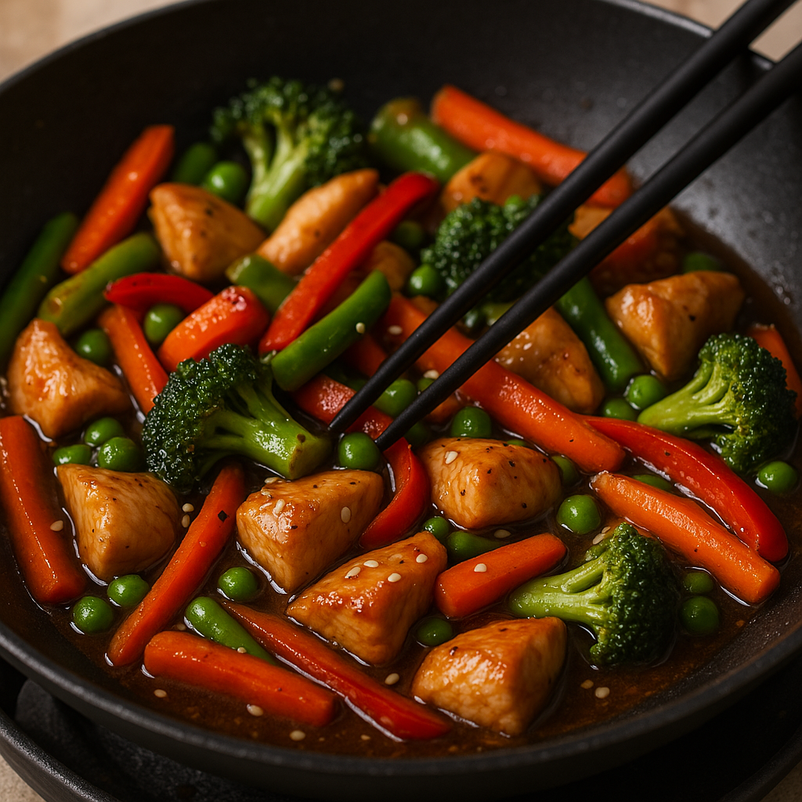

Home
Quick 6 Ingredient Stir Fry Recipe

Description
Here’s a super simple 5-ingredient stir fry that’s fast, filling, and can be made with pantry staples
Ingredients
- Protein - 1 chicken breast (or tofu, shrimp, or beef)
- Veggie mix – 2 cups frozen stir fry vegetables (or fresh bell pepper, broccoli, carrots)
- Soy sauce – 2–3 tablespoons
- Garlic – 2 cloves, minced (or 1 tsp garlic powder if lazy)
- Oil – 1 tbsp (canola, olive, or sesame)
- And of course, rice!
Steps
- Cook the rice according to package instructions and set aside.
- Heat oil in a large skillet or wok over medium-high heat.
- Add the protein and cook until browned and fully cooked. Remove and set aside.
- Add the garlic to the skillet and sauté for 30 seconds until fragrant.
- Add the veggie mix and stir fry for 3-5 minutes until tender-crisp.
- Return the protein to the skillet, add soy sauce, and stir everything together.
- Serve the stir fry over the cooked rice and enjoy!